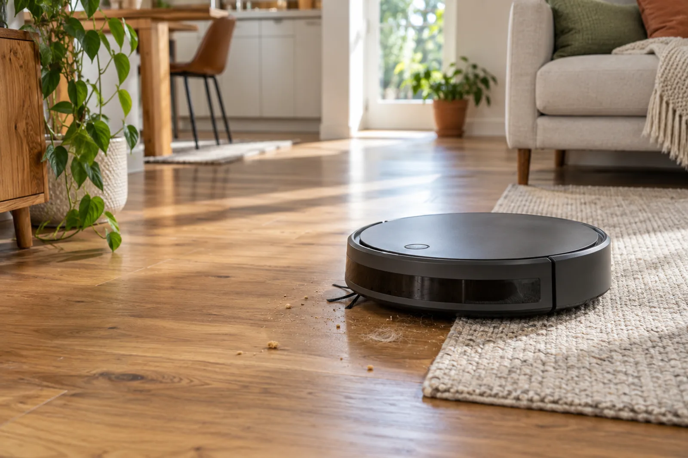

ROBOT VACUUMS / FIND YOUR FIT
Find a robot vacuum that fits your home.
Choose your floors, biggest mess, and how much upkeep you want. DustMigo narrows the shortlist and explains the trade-offs.

Straight to the point
Start with the chore you most want to avoid. The Q10 S5+ keeps dustbin upkeep down and adds a vibrating mop that lifts on carpets; the Qrevo S5V adds an automatic mop routine; the Dreame L40 Ultra Gen 2 targets pet hair and carpet; and the slim Saros 10R is the navigation-focused pick. These are research-based recommendations, not hands-on test winners.
Jump to the top picks